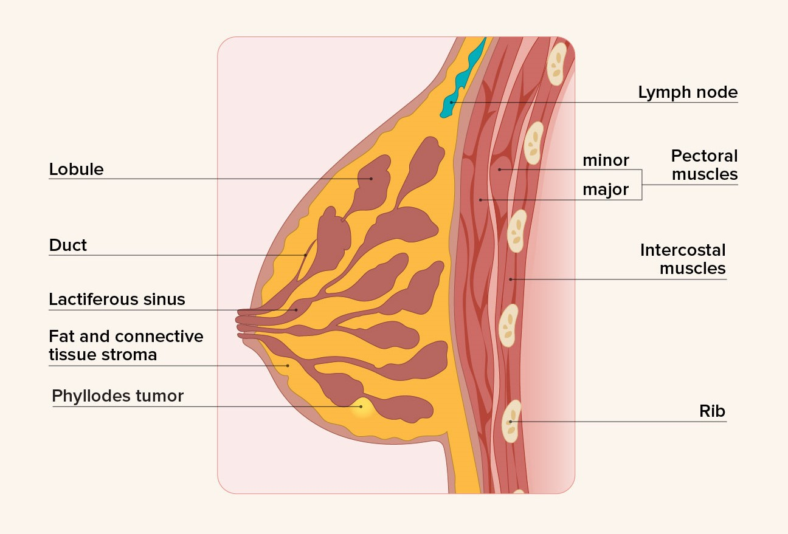
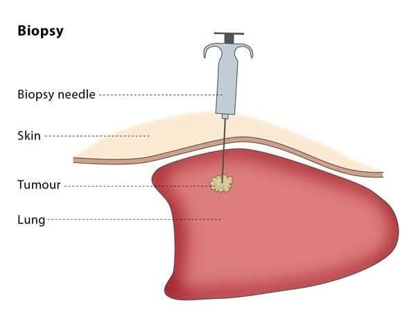
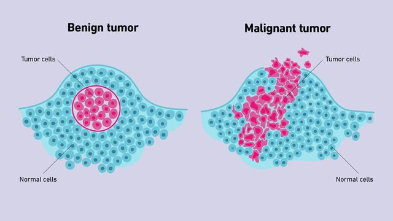

A phyllodes tumor is a particular subset of fibroadenoma that can take on benign, borderline, or malignant characteristics.
Around 2020, I visited my pediatrician for a regularly scheduled check up, but during this examination, we found a hard lump in my right breast. Shortly after, I went to consult with an oncologist who helped me schedule an ultrasound. Through this ultrasound, we confirmed the presence of the abnormal lump, and I proceeded by getting a biopsy. Luckily for me, the biopsy results were extremely good, and the abnormal lump was simply a fibroadenoma. It was the furthest thing I could get from breast cancer and relatively painless.
For the next year, I got regular ultrasounds to track the growth of the tumor, which stayed relatively the same! Though at one of these visits, my doctor found another lump located deeper within my breast. We began to track this lump as well.
As a few more months passed by, this second lump began to grow pretty quickly. My family and I consulted with a surgical oncologist (Dr. Sarma), and she recommended that we continue to follow the growth of the two lumps and only remove one if it became painful or grew larger than 3 centimeters. Since the second lump was only about 1.5 centimeters, I was not worried.
Near the end of the year, I went
Throughout this whole process, I was not very afraid because I trusted my doctors, which included my dad (Dr. Chai), and I knew most breast cancers were not fatal. During this time, I did however consult Google more than I ever did in my entire life. I was constantly confused about what distinguished a benign tumor from a malignant tumor, whether I had actual cancer or not, and (in a very teenage girl mentality) how the lumpectomy would affect my appearance.
The